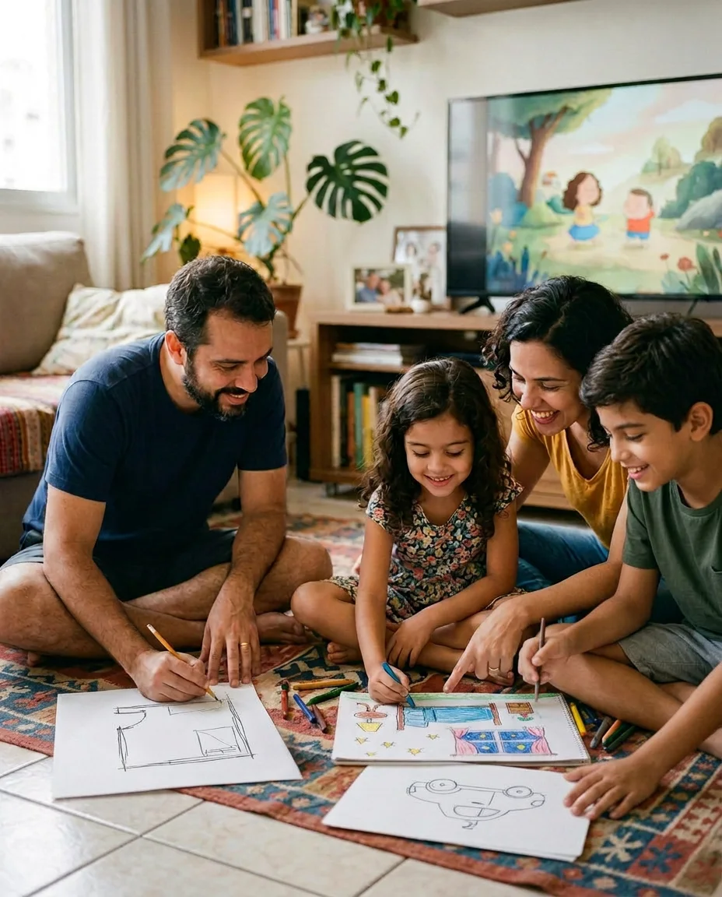
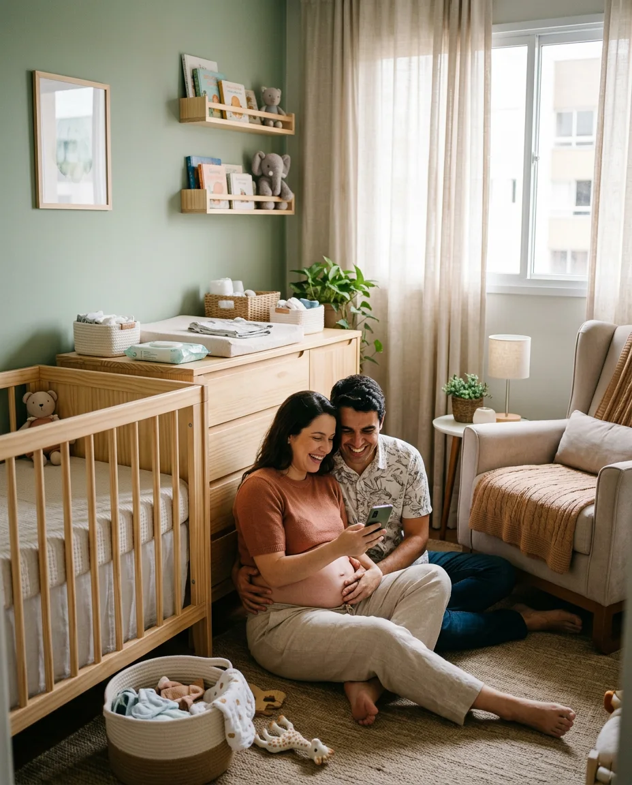
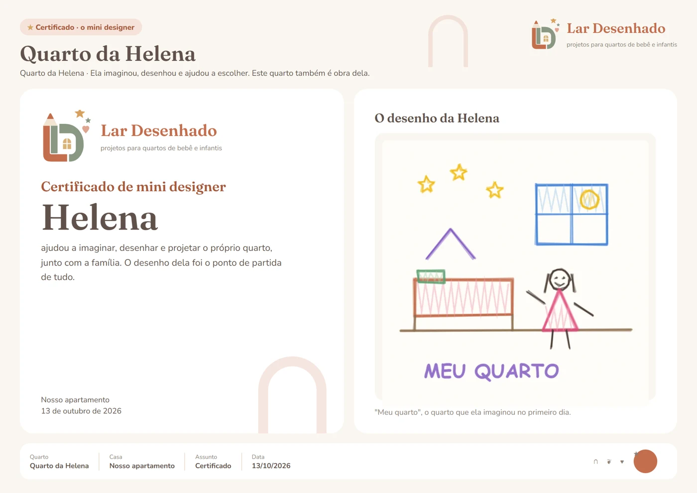
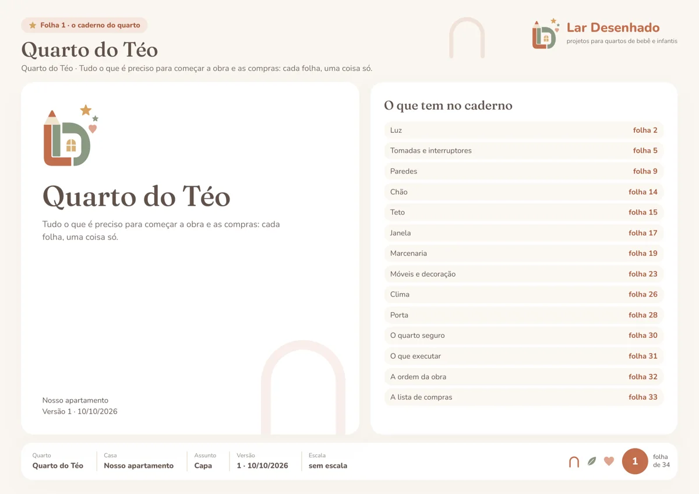
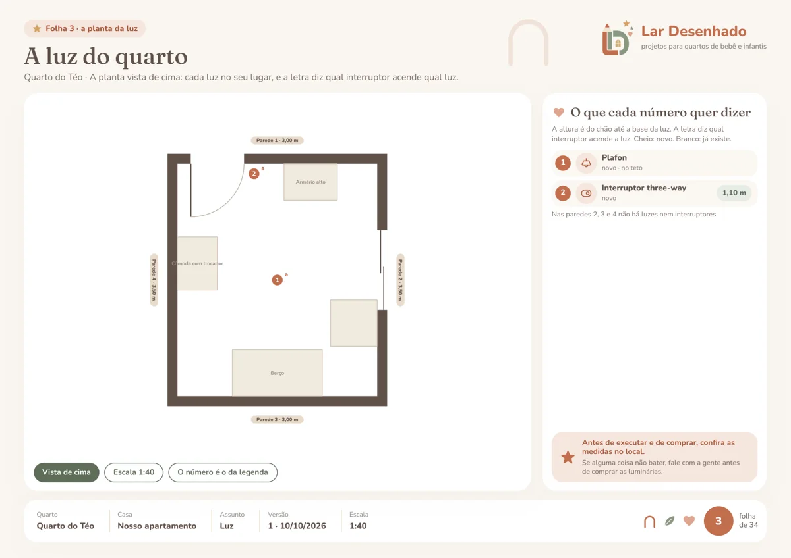
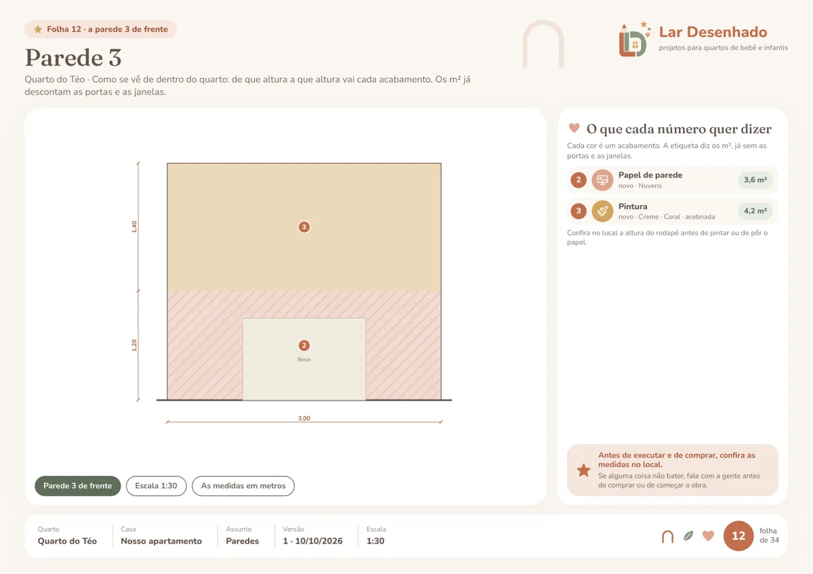
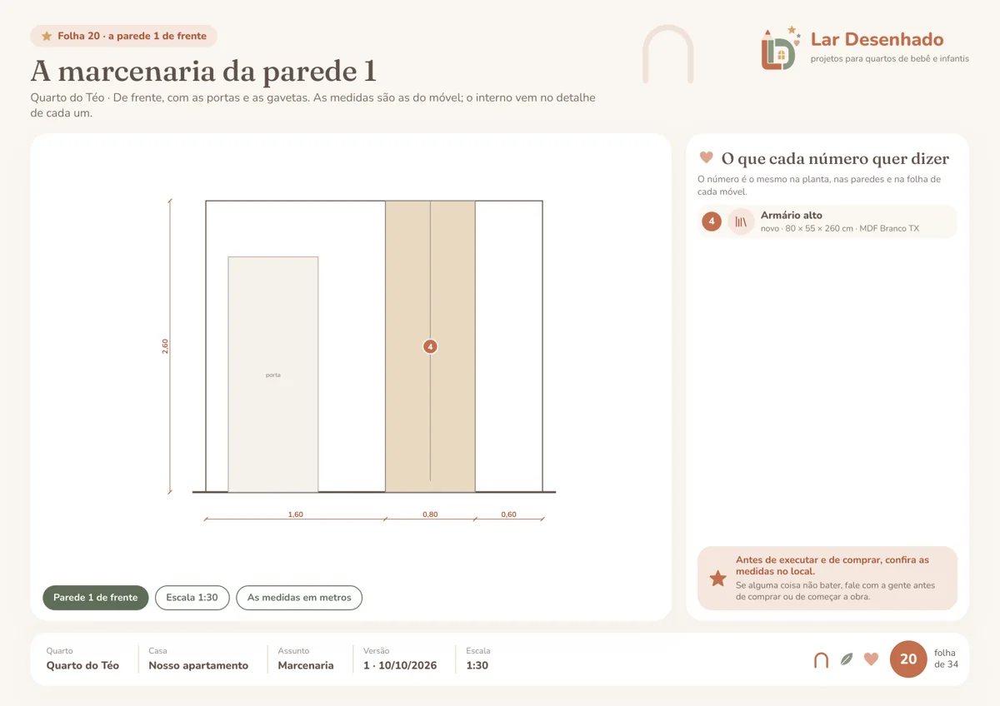
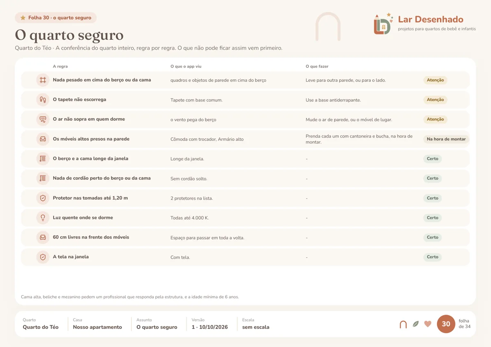
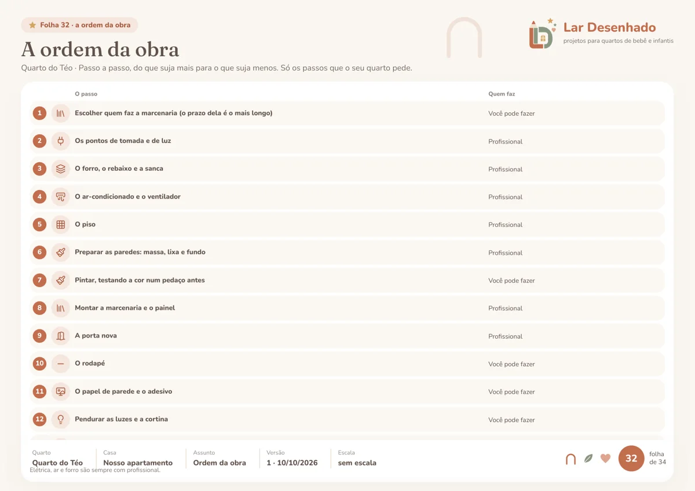
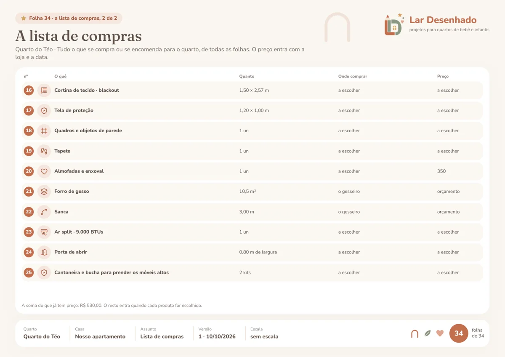

projetos para quartos de bebê e infantis
Uma experiência guiada em que pais e filhos imaginam, desenham e projetam juntos o quarto de cada fase, do bebê aos 12 anos. Do primeiro rabisco ao projeto pronto para fazer.
Começar nosso espaçoNo seu tempo, com a família reunida.

O quarto de uma criança guarda muita coisa: o jeito dela, a fase que ela vive, a rotina da casa e o que a família quer que ela sinta ali. Por isso, aqui é a família que conduz. A gente guia cada passo, cuida das medidas e da segurança, e você decide com calma, sem pressa e sem precisar entender de projeto.
E a criança não fica de fora: ela participa desde o primeiro desenho.
Você escolhe como quer fazer, e pode trocar no meio do caminho.
a trilha prática
Rápido, do seu jeitoPara quem quer resolver sem rodeios: poucas perguntas, direto ao ponto, tudo pelo celular. Você conta o essencial, mede, monta e recebe o projeto.a trilha em família
Uma experiência para viver juntoPara quem quer fazer do quarto um momento da família: o episódio na sala, o desenho da criança, a sua planta à mão e, no fim, o certificado de mini designer.
para quem está chegando
Na trilha prática, você faz tudo direto pelo celular, no seu ritmo: conte o que você imagina, meça o quarto, monte e veja o quarto do bebê pronto, antes de comprar. E, se houver um irmão mais velho, ele pode desenhar o quarto do irmãozinho e já começa a se sentir parte da chegada.
O quarto nasce pensando nos próximos anos: o berço, a cômoda com trocador, a poltrona das madrugadas e a luz baixa para a hora de mamar. E a marcenaria já fica pronta para quando o berço sair e a cama chegar.
Começar o quarto do bebê
Um caderno com tudo o que a obra e as compras precisam, uma coisa por folha, para levar ao marceneiro, ao eletricista e à loja. O caderno do exemplo abaixo tem 34 folhas.







Folhas reais do caderno gerado pelo app, num quarto de teste. E, além do caderno: as imagens do quarto pronto, vista de cima e parede por parede, e o quarto em 3D para girar e conferir.
Não. O desenho da criança é do jeito dela, e a sua planta pode ser um rascunho no papel. As medidas, a organização e o projeto ficam com a gente, passo a passo.
No quarto de bebê, quem desenha é você, junto com o irmão mais velho, se houver. O quarto já nasce pensando na próxima fase.
Do bebê aos 12 anos. O episódio, as perguntas e as escolhas mudam com a fase: 0 a 3, 3 a 6, 6 a 9 e 9 a 12.
Não. O episódio passa na TV, no computador ou no celular. A TV só deixa o momento mais gostoso, com todo mundo na sala.
Os dois desenham, os dois participam e cada um ganha o seu certificado de mini designer.
Pode. Você conta o que já tem em casa e quer manter, e isso entra no projeto.
Os dois, ou uma mistura. Para o sob medida, saem os desenhos para levar ao marceneiro.
Não. A lista do que comprar mostra onde encontrar cada item, e você compra onde quiser. Alguns links nos dão uma comissão, sem nenhum custo a mais para você.
As alturas, as passagens e as proteções seguem as normas e os guias de quarto infantil, sempre com a fonte. Segurança vem antes da decoração.
Os seus desejos, as suas escolhas. A gente transforma em espaço.
Vamos preparar esse espaço juntos?